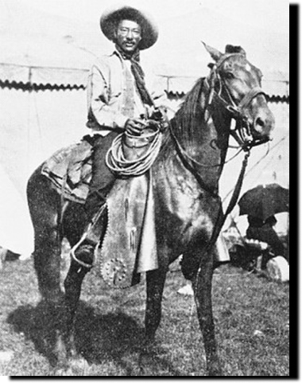
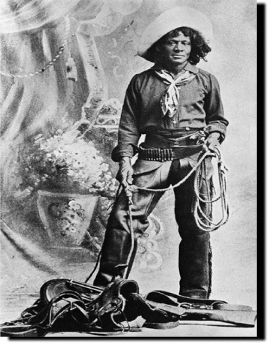
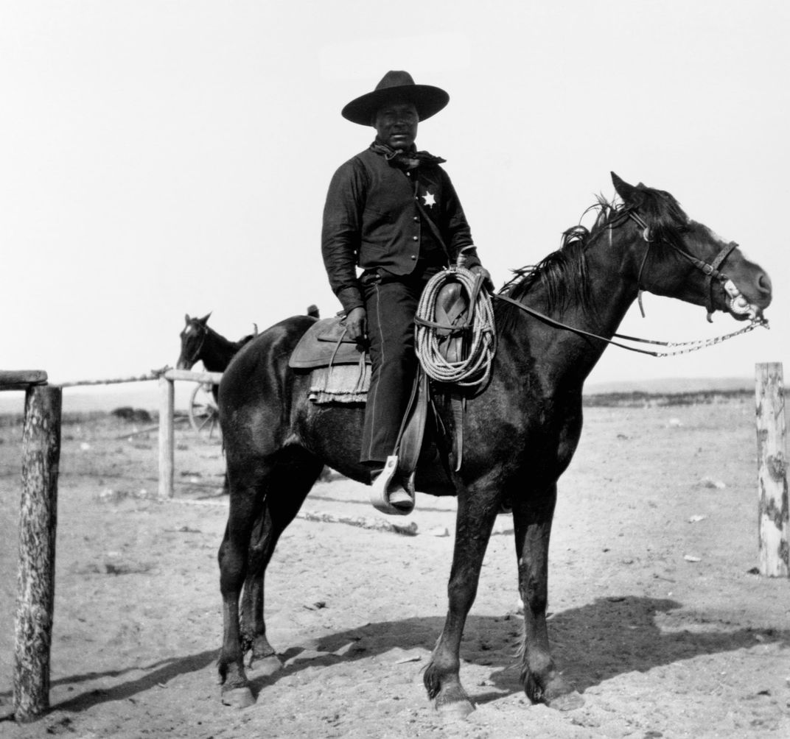
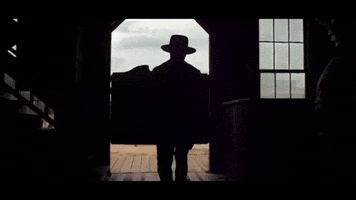

Bill Pickett, inventor of buldogging rodeo technique.

Nat Love, an American cowboy.
HISTORIANS ESTIMATE ONE IN FOUR COWBOYS WAS BLACK.

Black cowboy in Portacello, Idaho in 1903.
Contrary to popular belief, Black cowboys were commmonmplace in the Old West, especially after the civil war. Black cowboys, like the ones on the left, not only rose to decent acclaim but also made important contributions to rodeo culture.

SO WHY HAVEN'T WE HEARD OF THEM?